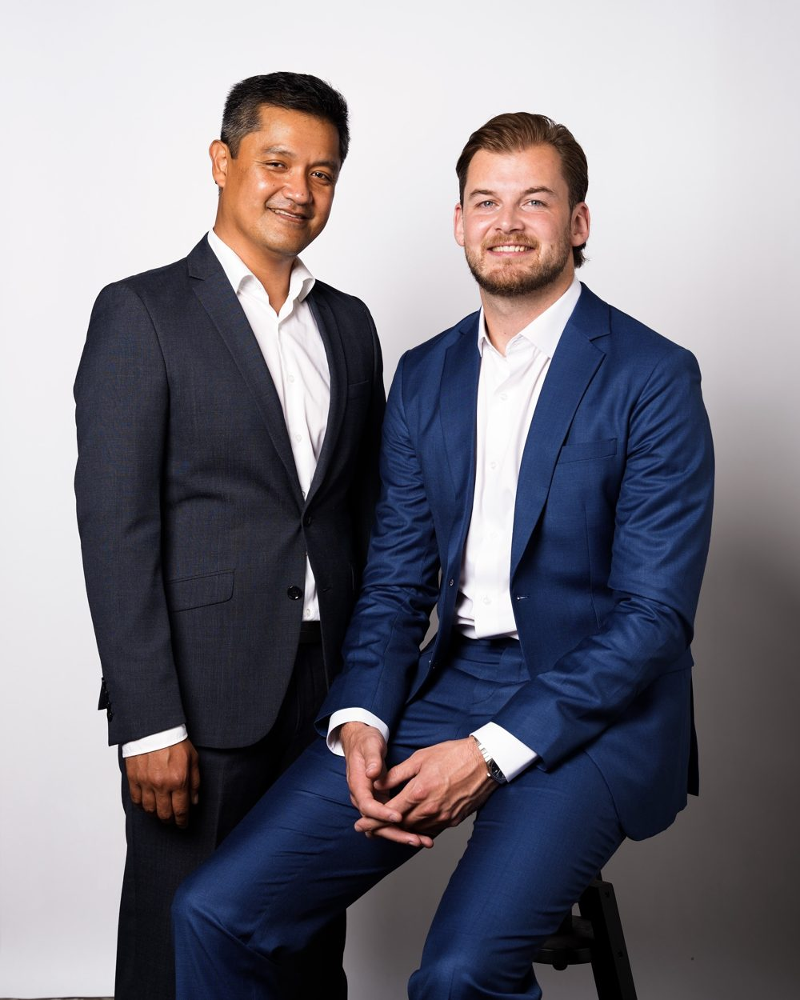

Adviseurs verzuim, cultuur & leiderschap én bedrijfsartsen onder één dak
Geen anoniem loket. Geen standaardadvies. Een hecht team van adviseurs en bedrijfsartsen dat direct met je meedenkt, met eigenaarschap als fundament.
Voor werkgevers
Elke verzuimdag kost gemiddeld €400 tot €450. Toch worstelen veel werkgevers met trage arbodiensten, onduidelijke adviezen en het gevoel dat ze er alleen voor staan. In de praktijk wordt er veel gedaan aan symptoombestrijding en het volgen van wet- en regelgeving, terwijl de daadwerkelijke oorzaak van het verzuim onopgelost blijft. Wij doen dit anders.
Wij richten ons op de daadwerkelijke oorzaak. We combineren de medische expertise van de bedrijfsarts met de praktische begeleiding van de adviseur verzuim, cultuur & leiderschap, zodat jij als werkgever er niet alleen voor staat.
EigenKompas brengt rust, richting en regie terug in onze organisatie. We hebben geleerd om van het verleden te leren en ons op de toekomst te richten.
HR Manager
Klant van EigenKompas
Onze werkwijze
Wij werken in vier duidelijke stappen. Van inzicht naar borging, met eigenaarschap als fundament.
We brengen de situatie en behoeften helder in kaart.
Samen bepalen we de koers en wat echt belangrijk is.
We creëren rust en structuur en begeleiden de juiste stappen naar herstel en groei.
We zorgen voor duurzame ontwikkeling en borgen wat werkt.
Mentaal verzuim in Nederland
Mentaal verzuim is in Nederland uitgegroeid tot dé grootste oorzaak van langdurig ziekteverzuim. Klachten als stress, burn-out en overbelasting zijn vaak het zichtbare topje; daaronder spelen werkdruk, onduidelijkheid en bedrijfscultuur. Wie psychische hulp nodig heeft, komt al snel op een wachtlijst bij de reguliere GGZ. De wettelijke Treeknorm van 14 weken wordt structureel overschreden: in 2025 wachtte bijna de helft van alle aanmeldingen langer dan dat. Tijdens die maanden gaat het verzuim onverminderd door, krijgt de medewerker geen passende behandeling en lopen de kosten voor de werkgever op.
Bij EigenKompas schakelen we direct. Dankzij onze connecties met coaches en psychologen heeft een medewerker binnen 2 weken een gesprek, daar waar de reguliere GGZ maanden uitkomt. Zo combineren we medische én organisatorische expertise om niet alleen de klacht aan te pakken, maar ook de oorzaak, zodat herstel duurzaam is en terugval wordt voorkomen.
Zonder passende aanpak
Met EigenKompas
Onze diensten
Afzonderlijk of in combinatie inzetbaar. Altijd passend bij jouw organisatie en vraagstuk.
Ondersteuning van organisatie, leidinggevenden en medewerkers, gericht op eigenaarschap.
Medische expertise plus begeleiding op mens en organisatie, vanuit één visie op eigenaarschap. De kracht van twee specialisten, de eenvoud van één team.
Strategisch advies voor organisaties die structureel willen verbeteren en professionaliseren op het gebied van algemene bedrijfsvraagstukken.
Plan een vrijblijvende kennismaking. We luisteren naar je vraag en denken met je mee over de beste route.
Ervaringen
Waar we eerder maanden moesten wachten, zat onze medewerker binnen twee weken bij een psycholoog. Dat gaf direct rust, voor de medewerker én voor ons als team.
HR-manager
Productiebedrijf
Eén vast aanspreekpunt dat zowel de medische als de menselijke kant begrijpt. Geen doorverbinden, geen standaardadvies, maar echt meedenken.
Leidinggevende
Zorgorganisatie
EigenKompas keek verder dan de klacht en pakte de oorzaak aan. Ons verzuim daalde duurzaam en de rust in het team kwam terug.
Directeur
MKB-dienstverlener
Over EigenKompas

EigenKompas is ontstaan vanuit een duidelijke overtuiging: verzuimbegeleiding kan persoonlijker en effectiever. Wij zijn een hecht team van adviseurs verzuim, cultuur & leiderschap en bedrijfsartsen: twee specialismen met één gezamenlijke visie.
Waar traditionele arbodiensten vaak afstandelijk en bureaucratisch opereren, kiezen wij bewust voor korte lijnen, direct contact en een aanpak waarbij de mens, niet het dossier, centraal staat.
Eigenaarschap als kernwaarde
Een duurzame oplossing begint bij eigenaarschap: bij de organisatie, de leidinggevende en de medewerker. Wij helpen je de juiste koers te vinden en vast te houden. Geen kant-en-klare oplossingen, maar begeleiding die aansluit bij wie je bent en wat jouw situatie vraagt. Jij bepaalt de richting.
We luisteren, begrijpen en staan naast je.
Jarenlange ervaring in verzuim, HR en organisatieontwikkeling.
We maken het concreet en zorgen voor beweging.
Onze pijlers
Mensen in beweging brengen.
Ruimte voor vertrouwen en regie.
Rust, overzicht en structuur.
Duurzame groei voor mens en organisatie.
Neem vrijblijvend contact op
Plan een vrijblijvende kennismaking. We luisteren naar je vraag en denken met je mee over de beste route.
We nemen binnen één werkdag contact met je op.